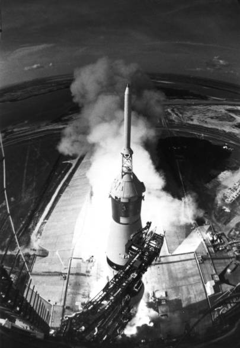

On 16 July, the weather was so hot, one observer noted, that the air felt like a silk cloth moving across his face. Nearly a million persons crowded the Florida highways, byways, and beaches to watch man's departure from the earth to walk on the moon. Twenty thousand guests looked on from special vantage points; one,* leading a poor people's protest march against the expense of sending man to the moon, was so awed that he forgot for a moment what he came to talk about. Thirty-five hundred representatives of the news media from most of the Western countries and much of the eastern hemisphere (118 from Japan, alone) were there to record the mission in newsprint for readers and to describe the scene for television and radio audiences, numbering according to various estimates as many as a billion watchers.2
Neil Armstrong, Edwin Aldrin, and Michael Collins must certainly have realized the significance of their date with destiny, even though all three were seasoned space travelers. But the normal launch day routine was observed. Donald Slayton rousted the crew out of bed about 4:00 in the morning. Nurse Dee O'Hara recorded a few physical facts, physicians made a quick check, and the astronauts ate breakfast. Waiting to help them into their suits when they finished was Joe Schmitt, the astronauts' launch-day valet for the past eight years. After they arrived at the launch complex, still another old friend and veteran from Mercury and Gemini days, pad leader Guenter Wendt, assisted them into the spacecraft seats. Armstrong crawled in first and settled in the left-hand couch. Collins followed him, easing into the couch on the right side. As they wriggled into position, were strapped in, and checked switches and dials, Aldrin enjoyed a brief interlude outside on the white room flight deck, letting his mind drift idly from subject to subject, until it was time for him to slide into the center seat. When the hatch snapped to, the threesome was buttoned up from one world, waiting for the Saturn V to boost them to another.3

Apollo 11 lifts off for the moon.
A Saturn V liftoff is spectacular, and the launch of Apollo 11 was no exception. But it didn't give the audience any surprises. To the three Gemini-experienced pilots, who likened the sensation to the boost of a Titan II, it was a normal launch. The 12 seconds the lumbering, roaring Saturn V took to clear the tower on the Florida beach did seem lengthy, however. At that point in the flight, a four-shift flight control team in Texas, presided over by mission director George Hage and flight director Clifford E. Charlesworth, assumed control of the mission. The controllers, and the occupants of the adjacent rooms crammed with supporting systems and operations specialists, had little to worry about. Unlike the three Saturn Vs that had carried men into space previously, this one had no pogo bounce whatsoever. Collins and Armstrong had noticed before launch that the contingency lunar sample pouch on Armstrong's suit leg was dangerously close to the abort handle. If it caught on the handle, they could be unceremoniously dumped into the Atlantic. Although Armstrong had shifted the pouch away from the handle, they worried about it until they attained orbital altitude. Then the crew settled down to give the machine a good checkout. Armstrong found he could not hear the service module's attitude thrusters firing; but Charlesworth's flight controllers told him they were behaving beautifully.4
To Armstrong, Aldrin, and Collins, the real mission would not start until they went into lunar orbit and separated the lunar module from the command module. To constrain their emotions and conserve their energies, they had decided to spend the first part of the trip resting, eating, and keeping themselves relaxed. If their matter-of-fact behavior and conversation before they went charging off to the moon on a direct course were any indication, they succeeded. Armstrong and Aldrin became drowsy before the engine firing that thrust them onto the lunar path - translunar injection - although Armstrong did murmur a mild "Whew," when it began. Aldrin casually observed that the S-IVB stage was a "tiny bit rattly," and Collins uneasily eyed a camera overhead during the 1.3-g acceleration loads, even though he knew it was fastened down securely enough not to bang him on the head. Like their predecessors, they had the upside-down sensation for a while, and Collins, who had to get out of his couch to work with the navigation equipment in the lower bay, was careful to move his head slowly, to guard against getting sick. But none of the three had any physical problems.5
The trip to the moon was quite pleasant. The crewmen ate and slept well, lodging themselves comfortably in favorite niches about the cabin. What work there was to do they enjoyed doing. Collins loved flying the spacecraft - no comparison with the simulator at all, he said - when he pulled the command module away from the S-IVB stage and then turned around to dock with the lunar module. But he was miffed at having to use extra gas from his thruster supply; it was like going through a bad session on the trainer, he fumed. Armstrong was delighted that there was not one scratch on the probe. The command module pilot had a momentary scare when he unstowed the probe and noticed a peculiar odor in the tunnel, like burned electrical insulation - but he could find nothing wrong. They relaxed again and began taking off their suits. Armstrong and Aldrin were especially careful to guard against snags; their lives would depend on these garments in a few days.
Their path to the moon was accurate, requiring only one midcourse correction, a burst from the service propulsion engine of less than three seconds to change the velocity by six meters per second. Not having much to do gave the pilots an opportunity to describe what they were seeing and, through color television, to share these sights and life inside a lunar-bound spacecraft with a worldwide audience. They compared the deeper shades of color their eyes could see on the far away earth with those Houston described from the television transmission. Aldrin, pointing the camera, once asked CapCom Charles Duke to turn the world a bit so he could see more land and less water. After one particularly bright bit of repartee, Duke accused Collins of using cue cards; but the command module pilot replied firmly that there was no written scenario - "We have no intention of competing with the professionals, believe me," he said. The crew also received a daily news summary, a tradition dating from the December 1965 Gemini VII mission. During one of these sessions, the crew learned the latest news on <cite>Luna 15,</cite> the unmanned Russian craft launched 13 July and expected to land on the moon, scoop up a sample, and return to the earth.** Several times thereafter the trio asked about the progress of this flight.6
On Saturday, 19 July, almost 62 hours after launch, Apollo 11 sailed into the lunar sphere of influence. Earlier, television viewers in both hemispheres had watched as the crew removed the probe and drogue and opened the tunnel between the two craft. Aldrin slid through, adjusted his mind to the new body orientation, checked out the systems, and wiped away the moisture that had collected on the lunar module windows, while the world watched over his shoulder. The pilots were glad to get the tunnel open and the probe and drogue stowed a day early - especially Collins, who had worried about the reliability of this equipment ever since his first sight of it years before.
As the moon grew nearer and the view filled three-quarters of the hatch window, Armstrong discussed lunar descent maneuvers with the flight controllers. He was glad to learn that the service module engine had performed as well in flight as it had during ground tests. The last kilometers on the route were as uneventful as the first. The pilots maintained their mental ties with the earth, enjoying the newscasts radioed to them and the knowledge that their own voyage was front page news everywhere. Even the Russians gave them top billing, calling Armstrong the "czar" of the mission. (At one time, when flight control called for the commander, Collins replied that "the Czar is brushing his teeth, so I'm filling in for him.") Had the news copy been available to them, they could have read it without difficulty by the light of the earthshine.
A day out from the moon, the crewmen saw a sizable object out the window, which they described variously as a cylinder, something L-shaped like an open suitcase, an open book, or even a piece of a broken antenna. All three believed that it had come from the spacecraft. Collins at first said he had felt a distinct bump; after thinking it over, he decided it must have been his imagination - the modular equipment stowage assembly in the lunar module descent stage had not really fallen off. Or had it? Whatever it was, it was interesting; the crew talked quite a bit about it after returning to earth.
* Dr. Ralph D. Abernathy.
** Luna 15 entered lunar orbit 17 July and made 52 revolutions of the moon before hardlanding on the surface. Unmanned Luna 16, launched by the U.S.S.R. on 12 Sept. 1970, softlanded with an earth-operated drill and returned a recovery capsule containing a cylinder of lunar soil to the earth on 24 Sept. Senate Committee on Aeronautical and Space Sciences, Soviet Space Programs, 1971–75, Staff Report prepared by Congressional Research Service, Library of Congress, vol. 1, 30 Aug. 1976, pp. 145-49.
2. 10:56:20 PM, EDT, 7/20/69: The Historic Conquest of the Moon as Reported to the American People by CBS News over the CBS Television Network (New York: CBS, 1970; this book, under 200 pages, provides an excellent cross-section of activities around the world as related to Apollo 11 events of 16 through 24 July 1969), pp. 13, 15, 20; Charles D. Benson and William Barnaby Faherty, Moonport: A History of Apollo Launch Facilities and Operations, NASA SP-4204 (Washington, 1978), p. 474; MSC, "Apollo 11 Mission Commentary," 16 July 1969, tapes 3-1, 4-1; MSC News Center, Apollo 11 Accreditation List [16 July 1969].
3. Michael Collins, Carrying the Fire: An Astronaut's Journeys (New York: Farrar, Strauss and Giroux, 1974), pp. 355-59; "Apollo 11 Mission Commentary," tape 11-2; MSC, "Apollo 11 Technical Crew Debriefing," 2 vols., 31 July 1969, vol. 1, p. 1-3; Collins to James M. Grimwood, 13 Dec. 1976, with enc.
4. NASA, Mission Report: Apollo 11, MR-5 (Washington, 14 Aug. 1969), p. 5; George H. Hage memo, "Mission Director's Summary Report, Apollo 11," 24 July 1969; MSC, "Apollo 11 Technical Air-to-Ground Voice Transmission (GOSS Net 1)," July 1969, p. 17; "Apollo 11 Debriefing," 1: 3-1, 3-2, 3-4, 3-8, 3-9, 3-11, 3-12; Christopher C. Kraft, Jr., memo, "Flight Control Manning for Apollo 11," 30 June 1969, with enc.; John P. Mayer memo, "SSR Manning for Apollo 11," 14 July 1969, with enc.; NASA, "Apollo 11 Lunar Landing Mission," press kit, news release 69-83K, 26 June 1969, pp. 197-99; Clifford E. Charlesworth et al., "Flight Directors Report, Apollo 11," n.d., p. 3; Collins letter, 13 Dec. 1976.
5. "Apollo 11 Voice," p. 16; MSC, "Apollo 11 Onboard Voice Transcription, Recorded on the Command Module Onboard Recorder Data Storage Equipment (DSE)," August 1969, pp. 19, 32, 35, 38-40, 42; "Apollo 11 Debriefing," 1: 3-10, 4-4, 4-5, 6-32, 6-33; MSC, "Apollo 11 Mission Report," MSC-00171, November 1969, pp. 1-1, 3-1, 4-1, 7-1.
6. "Onboard Voice," pp. 43, 46-50; "Apollo 11 Voice," pp. 9, 24, 30, 34, 50, 52, 66, 96, 101, 106-112, 147, 154; Charlesworth et al., "Flight Directors Report," pp. 3-7; Hage memo, "Apollo 11 Daily Operations Report No. 2," 18 July 1969; Hage memo, 24 July 1969; "Apollo 11 Debriefing," 1: 5-5, 5-6, 5-9, 6-19 through 6-22; 10:56:20 PM, EDT, 7/20/69, pp. 53-54.